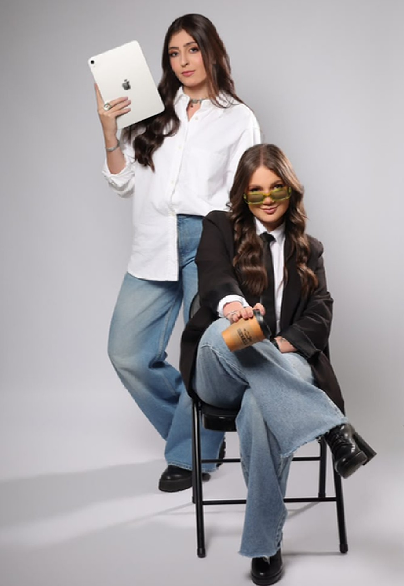
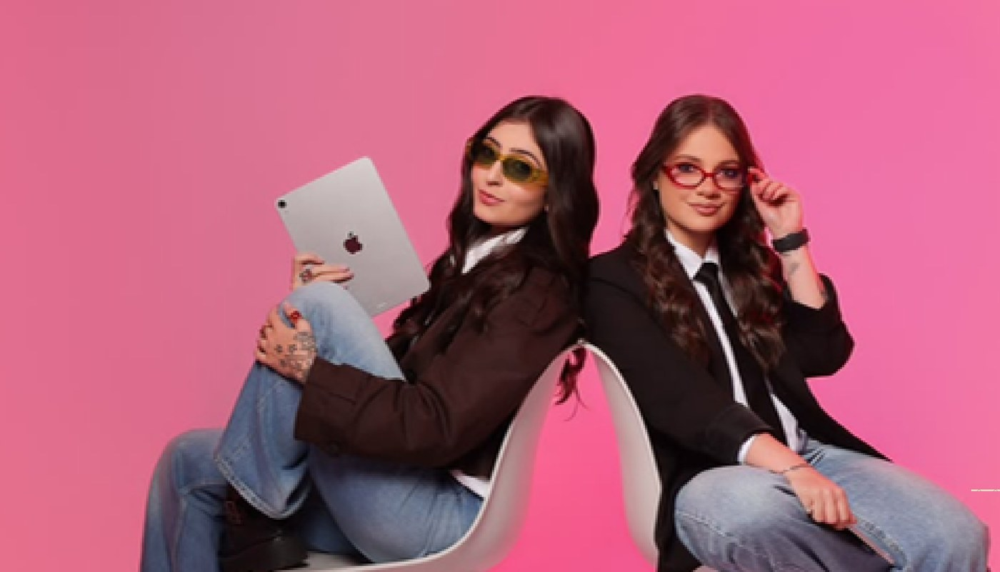
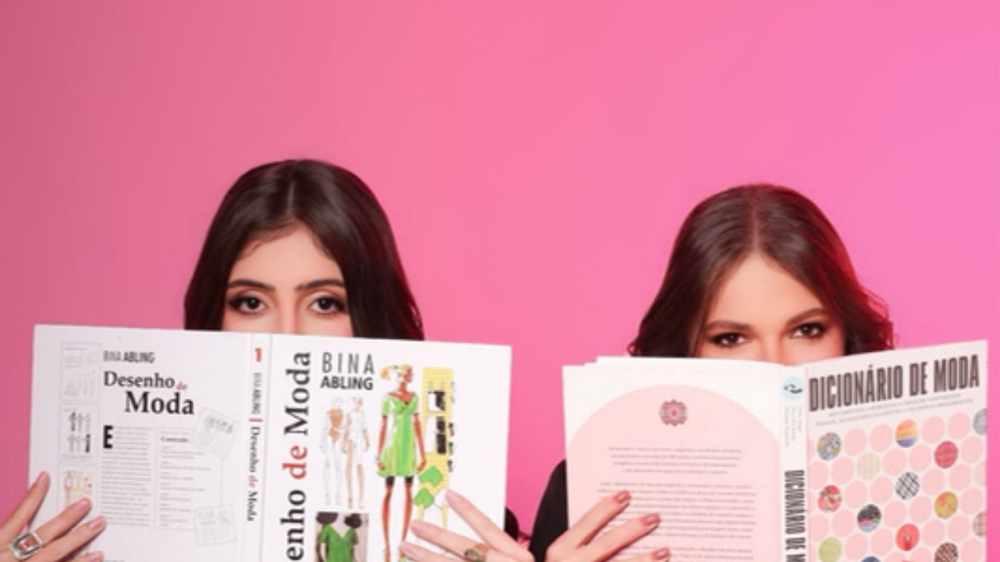

Estúdio criativo de moda
Alt The Fashion Office
Design de moda, estamparia e estratégia de marca — por Marcela Drumond & Vitória Fagundes.

Quem cria
com você
Marcela Drumond
Design de Moda — Faculdade Santa Marcelina, SP
Focada no desenvolvimento de projetos que unem estamparia, ilustração e design gráfico, explorando a interseção entre essas áreas para criar peças únicas e expressivas.
Vitória Fagundes
Fashion Business & Marketing de Moda — Escola de Moda e Negócios Denise Aguiar
Focada na construção da identidade e no posicionamento de marca, de forma estratégica e personalizada para cada cliente.
Combinamos visão criativa técnica com habilidades de gestão, permitindo entender tanto o desenvolvimento de produtos quanto a estratégia comercial que faz uma marca crescer.
Duas visões, uma só direção criativa — dos livros de referência ao brainstorm em tela.


O que
oferecemos
Do briefing à pasta final: um processo completo em cinco etapas para transformar uma ideia em coleção pronta para produção.
Imersão na marca
Briefing, público-alvo, posicionamento, faixa de preço, objetivos, concorrentes e referências.
Pesquisa e direção criativa
Tendências, comportamento, moodboard, cartela de cores, materiais e narrativa da coleção.
Planejamento estratégico
Quantidade de peças, mix de produtos, curva de tamanhos, lançamentos, precificação sugerida.
Desenvolvimento da coleção
Croquis, desenhos técnicos, fichas técnicas, tecidos, estampas, beneficiamentos e acabamentos.
Engenharia da coleção
Coordenados, combinação de peças, looks, mix comercial e curva ABC.
Entrega final: conceito da coleção, moodboards, cartelas de cores e tecidos, croquis, desenhos técnicos, fichas técnicas, planejamento completo e apresentação em PDF organizada.
Estampas exclusivas (rapport ou localizada), sob medida para a identidade da sua marca.
Essencial
1
estampaIntermediário
3
estampasColeção
6
estampasUm diagnóstico completo da marca, com direção clara para os próximos passos.
Tecidos certos, fornecedores confiáveis e menos risco de prejuízo ou atraso de produção.
Diagnóstico Têxtil
Reunião de imersão, auditoria e relatório técnico.
Estratégia Têxtil
Diagnóstico, pesquisa de tendências, curadoria de tecidos, mapa de fornecedores e definição do mix de matérias-primas.
Curadoria de Tecidos
Fornecedores, novidades e tecidos exclusivos.
Prazo de 7 a 15 dias para pesquisa de artigos e fornecedores, com aprovação de pilotos incluída.
O processo
em movimento
Imersão na marca
- Reunião de briefing
- Entendimento do público-alvo
- Posicionamento da marca
- Faixa de preço
- Objetivos da coleção
- Concorrentes e referências
Pesquisa e direção criativa
- Pesquisa de tendências
- Pesquisa de comportamento
- Referências visuais (moodboard)
- Cartela de cores
- Materiais, tecidos e aviamentos
- Conceito e narrativa da coleção
Planejamento estratégico
- Definição da quantidade de peças
- Mix de produtos
- Curva de tamanhos
- Planejamento de lançamentos
- Precificação sugerida
- Peças-chave e produtos de entrada
Desenvolvimento da coleção
- Croquis
- Desenhos técnicos
- Fichas técnicas completas
- Indicação de tecidos
- Estampas (quando houver)
- Bordados, lavanderias e beneficiamentos
Engenharia da coleção
- Organização por coordenados
- Combinação entre peças
- Planejamento de looks
- Mix comercial
- Curva ABC (estrela, apoio e imagem)
Trabalhamos com desenvolvimento criativo estratégico, prezando pela exclusividade, qualidade técnica e coerência estética de cada projeto.
Os pacotes acima são padrão — demandas personalizadas ou com características específicas são analisadas individualmente para orçamento.
Vamos criar
juntos.
Estamos à disposição para alinhar os detalhes e iniciar o processo criativo.
Enviar um e-mail